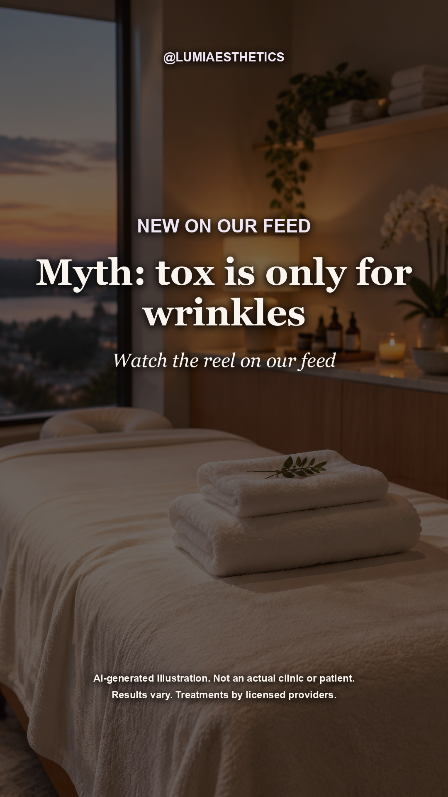
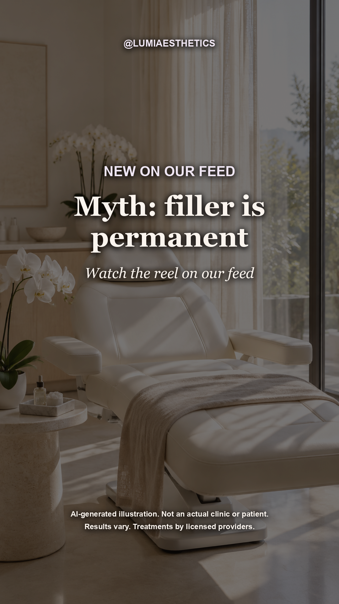
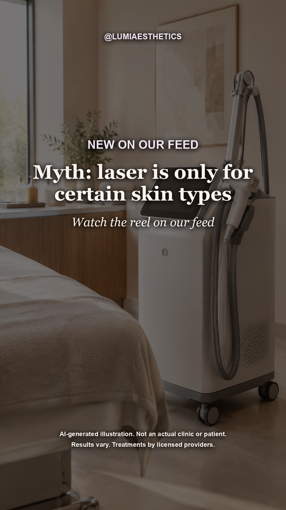

Each reel comes in a voice version and a silent version (add trending audio in Instagram). Captions are under each reel. Please have your medical director approve each reel before posting. Want a change? Reply to the email and we'll redo it.
It depends on several things. Ask at your consultation. *Duration varies by product, area and person. Results vary. Treatments by licensed providers. Medical Director: Dr. Maya Patel, MD. #medspa #aesthetics #skincare #selfcare
General guidance only. Always follow your provider's instructions. *Varies by person. Results vary. Treatments by licensed providers. Medical Director: Dr. Maya Patel, MD. #medspa #aesthetics #skincare #selfcare
General tips only. Your provider's instructions always come first. *Varies by person. Results vary. Treatments by licensed providers. Medical Director: Dr. Maya Patel, MD. #medspa #aesthetics #skincare #selfcare
Frozen face? Not the goal. Your provider tailors every dose to you. Questions welcome at your consult. Results vary. Treatments by licensed providers. Medical Director: Dr. Maya Patel, MD. #medspa #aesthetics #skincare #selfcare
Curious what a first tox visit looks like? Consultation, treatment, aftercare. *Times vary by treatment. Results vary. Treatments by licensed providers. Medical Director: Dr. Maya Patel, MD. #medspa #aesthetics #skincare #selfcare
There's more to it than lines. Ask your provider what's appropriate for you. Results vary. Treatments by licensed providers. Medical Director: Dr. Maya Patel, MD. #medspa #aesthetics #skincare #selfcare
Good questions make for a good consultation. Bring these to yours. Results vary. Treatments by licensed providers. Medical Director: Dr. Maya Patel, MD. #medspa #aesthetics #skincare #selfcare
How long does filler last? It depends. Your provider can explain your options. *Varies by product and person. Results vary. Treatments by licensed providers. Medical Director: Dr. Maya Patel, MD. #medspa #aesthetics #skincare #selfcare
Hair grows in cycles, so treatments are spaced out. Ask us about a plan. *Number of sessions varies. Results vary. Treatments by licensed providers. Medical Director: Dr. Maya Patel, MD. #medspa #aesthetics #skincare #selfcare
Timing helps. Book a consultation to plan your sessions. Results vary. Treatments by licensed providers. Medical Director: Dr. Maya Patel, MD. #medspa #aesthetics #skincare #selfcare
General guidance only. Your provider's instructions always come first. *Varies by person. Results vary. Treatments by licensed providers. Medical Director: Dr. Maya Patel, MD. #medspa #aesthetics #skincare #selfcare
Your provider will check what's suitable for your skin at a consultation. Results vary. Treatments by licensed providers. Medical Director: Dr. Maya Patel, MD. #medspa #aesthetics #skincare #selfcare
Made for Meta ads: the hook is on screen from the first frame. Use 9:16 for Reels and Stories, 4:5 for Feed. Ad copy is under each one. Your medical director should approve ads too.
Headline: Book a consultation at Lumi Aesthetics Primary text: It depends on several things. Ask at your consultation. *Duration varies by product, area and person. Book your consultation with Lumi Aesthetics. Results vary. Treatments by licensed providers.
Headline: Book a consultation at Lumi Aesthetics Primary text: General guidance only. Always follow your provider's instructions. *Varies by person. Book your consultation with Lumi Aesthetics. Results vary. Treatments by licensed providers.
Headline: Book a consultation at Lumi Aesthetics Primary text: General tips only. Your provider's instructions always come first. *Varies by person. Book your consultation with Lumi Aesthetics. Results vary. Treatments by licensed providers.
Thank you, Sofia M., for your kind words. Individual experience shared with permission. Results vary. Treatments by licensed providers. Medical Director: Dr. Maya Patel, MD. #medspa #aesthetics #skincare #selfcare
Thank you, Hannah L., for your kind words. Individual experience shared with permission. Results vary. Treatments by licensed providers. Medical Director: Dr. Maya Patel, MD. #medspa #aesthetics #skincare #selfcare
Send us more Google reviews for next month (word for word, with the reviewer's OK).
Post it the day the reel goes up. Add an Instagram question sticker in the space at the bottom: "Ask us anything about filler"
Post it the day the reel goes up. Add an Instagram question sticker in the space at the bottom: "Ask us anything about filler"
Post it the day the reel goes up. Add an Instagram question sticker in the space at the bottom: "Ask us anything about filler"
Post it the day the reel goes up. Add an Instagram question sticker in the space at the bottom: "Ask us anything about tox"
Post it the day the reel goes up. Add an Instagram question sticker in the space at the bottom: "Ask us anything about tox"

Post it the day the reel goes up. Add an Instagram question sticker in the space at the bottom: "Ask us anything about tox"
Post it the day the reel goes up. Add an Instagram question sticker in the space at the bottom: "Ask us anything about tox"

Post it the day the reel goes up. Add an Instagram question sticker in the space at the bottom: "Ask us anything about filler"
Post it the day the reel goes up. Add an Instagram question sticker in the space at the bottom: "Ask us anything about laser hair removal"
Post it the day the reel goes up. Add an Instagram question sticker in the space at the bottom: "Ask us anything about laser hair removal"
Post it the day the reel goes up. Add an Instagram question sticker in the space at the bottom: "Ask us anything about laser hair removal"

Post it the day the reel goes up. Add an Instagram question sticker in the space at the bottom: "Ask us anything about laser hair removal"